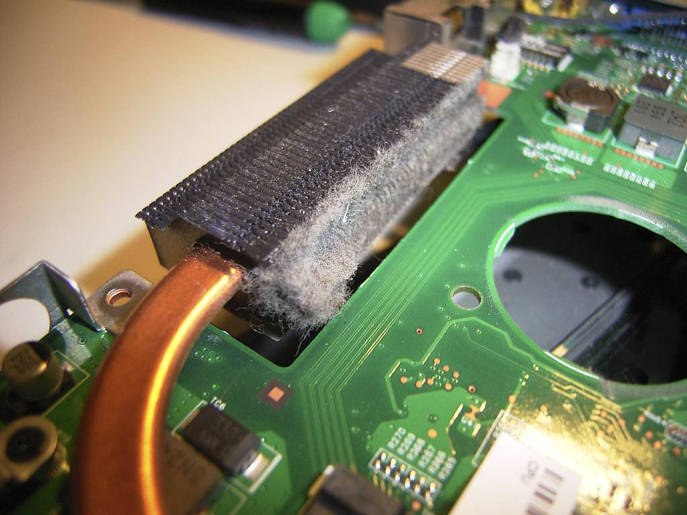

המאוורר הפסיק לעבודThe fan gave up
מחשב שמאוורר שלו מתקלקל מתחמם, מאט ומרעיש. ככה טליה הגיעה לשגיא, והנה מה שהיא כתבה אחר כך בגוגל.When a computer’s fan fails, it runs hot, slows down and gets loud. That is how Talia came to Sagi, and this is what she wrote on Google afterwards.
״הגעתי לשגיא בעקבות תקלה במאוורר של המחשב, הוא היה זמין, סבלני ומקצועי מאוד. הסביר לי על התקלה ועל אופן הטיפול, הזמין עבורי מאוורר חדש והרכיב אותו וגם מצא עבורי פתרון זמני כדי שאוכל להמשיך להשתמש במחשב על אף התקלה.״“I came to Sagi with a fault in my computer’s fan. He was available, patient and very professional. He explained the fault and how he would fix it, ordered a new fan for me and fitted it, and even found me a temporary fix so I could keep using the computer despite the fault.”
